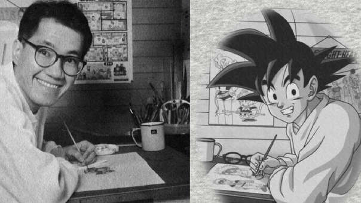

Según Toriyama sus principales fuentes de inspiración vienen de su infancia: de las creaciones de Osamu Tezuka., en especial Astro Boy., los dibujos animados de Walt Disney y las películas de Jackie Chan., con su mezcla de artes marciales y humor.

Akira Toriyama (5 de abril de 1955, Nagoya) es un mangaka japonés. Ha alcanzado una relevancia universal como creador del universo de Dragon Ball.
Lugar de nacimiento
Antes de convertirse en profesional del manga, trabajó en una agencia de publicidad como diseñador de carteles. Participó un concurso de la mítica revista Shonen Jump y, si bien no ganó, quedó finalista, lo que le permitió debutar con una historia corta en 1978.

Su primer éxito fue la comedia de ciencia ficción Dr. Slump.que se publicó entre 1980 y 1984. Recibió el importante Premio Shogakukan a la mejor serie de manga shonen o shojo del año en 1981 y fue adaptada a una serie de anime. Sólo en Japón llegó a vender más de 35 millones de copias. Una vez concluida Dr. Slump, Shonen Jump comenzó a serializar Dragon Ball., que a menudo se ha considerado el manga más influyente de la historia. Hasta esa fecha, predominaban en el género los enfoques serios e hiperviolentos, mientras que Toriyama le dio un tono más cómico, luminoso y aventurero. La serie, y su continuación Dragon Ball Z., se publicó entre 1984 y 1995. Ha dado lugar a varias series de animación., numerosas películas. y varios videojuegos., además de muchísimos objetos de merchadising. Se calcula que ha vendido unos 150 millones de tomos en Japón y otros 300 millones en total en el resto del mundo.